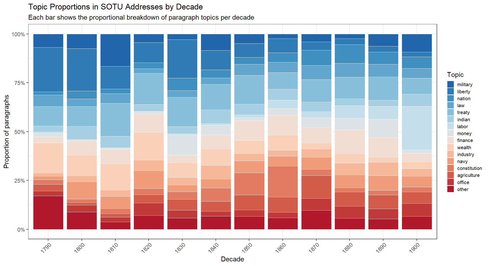
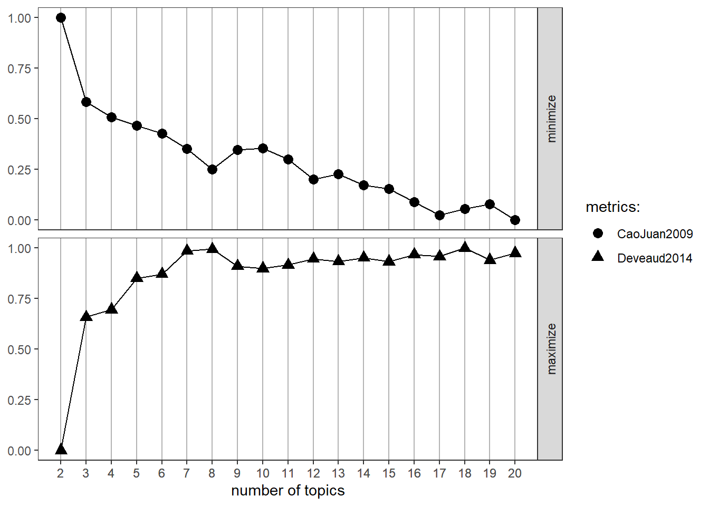
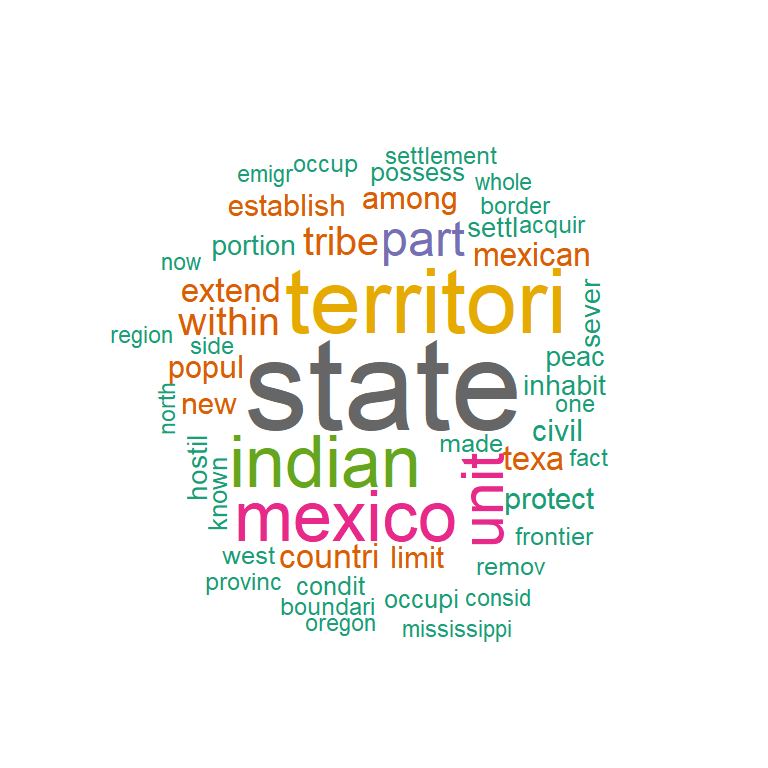
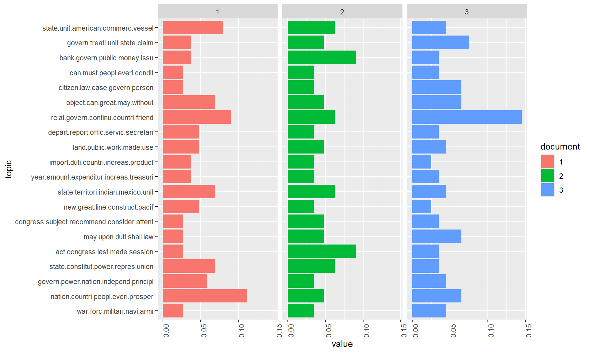
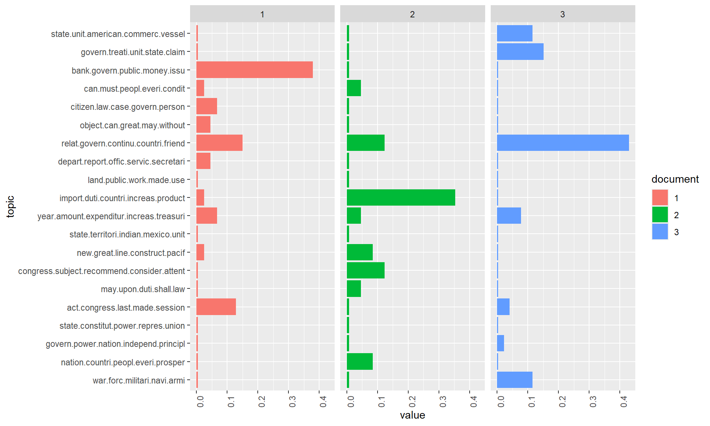
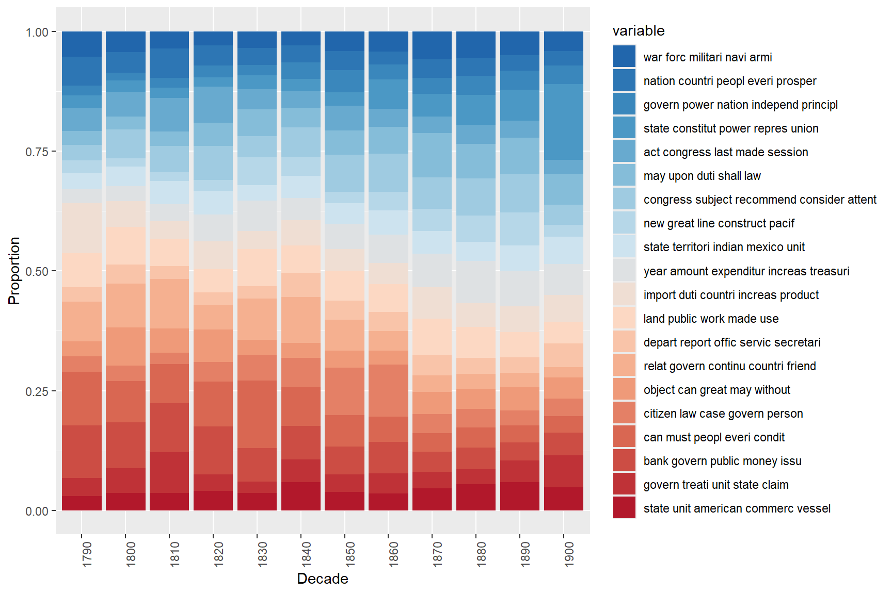

Method | Human Input | Key Advantage | Key Limitation | R Package |
|---|---|---|---|---|
LDA (unsupervised) | None (only K) | Fully data-driven; no assumptions about topics | Topics may be uninterpretable; sensitive to K | topicmodels |
Seeded LDA | Seed terms per topic | Combines data patterns with domain knowledge | Seed terms bias results toward researcher expectations | seededlda |
STM | Covariates / metadata | Models topic variation with covariates | Requires rich metadata; more complex to fit | stm |
Network-based | None | No need to specify K | Less interpretable; computationally expensive | Various |
Topic Modelling with R

Introduction

This tutorial introduces topic modelling using R — a family of machine learning methods for discovering latent thematic structure in collections of texts. Topic modelling has become one of the most widely used computational text analysis techniques across the humanities and social sciences, and this tutorial walks through both the conceptual foundations and practical implementation in R.
The tutorial covers two complementary approaches: a human-in-the-loop workflow that combines unsupervised LDA with a supervised, seeded model informed by expert knowledge; and a purely data-driven workflow using the tm and topicmodels packages. Both approaches use the State of the Union (SOTU) addresses as a running example, allowing us to track how the topics discussed by US presidents have evolved over more than two centuries.
Prerequisite Tutorials
Before working through this tutorial, please ensure you are familiar with:
Learning Objectives
By the end of this tutorial you will be able to:
- Explain what topic models are, how LDA works conceptually, and what assumptions underlie topic modelling
- Distinguish between unsupervised (data-driven) and supervised (seeded) topic models and explain when each is appropriate
- Pre-process a text corpus for topic modelling using both
quantedaandtm - Fit and inspect an unsupervised LDA model using
topicmodels::LDA() - Use the results of unsupervised LDA to define seed terms for a supervised
seededldamodel - Use
ldatuningto empirically evaluate the optimal number of topics - Interpret beta (term-topic) and theta (document-topic) distributions
- Visualise topic distributions as word clouds, bar plots, and time series
- Filter a corpus by topic and analyse topic proportions over time
- Critically evaluate the limitations and critiques of topic modelling
Citation
Martin Schweinberger. 2026. Topic Modelling with R. The Language Technology and Data Analysis Laboratory (LADAL), The University of Queensland, Australia. url: https://ladal.edu.au/tutorials/topic/topic.html (Version 2026.03.28), doi: .
What Is Topic Modelling?
Section Overview
What you’ll learn: The conceptual basis of topic modelling, the key assumptions of LDA, its relationship to other text analysis methods, and an honest account of its limitations
Topic modelling refers to a family of unsupervised machine learning methods that discover latent thematic structure — topics — in a collection of documents by identifying patterns of word co-occurrence (Blei, Ng, and Jordan 2003; Busso et al. 2022). The central insight is simple: if a document is about a particular subject, words associated with that subject will appear more often in it than in documents about other subjects. A document about military affairs will contain army, war, and treaty more often than a document about agriculture. Topic models exploit this regularity to infer both what topics exist in a corpus and how much each document engages with each topic.
Conceptually, a topic is a probability distribution over the vocabulary of a corpus — a list of words with associated probabilities of appearing in that topic. The topic labelled (by a researcher, after the fact) as military might assign high probability to army, war, naval, treaty, and conflict, and low probability to agriculture, harvest, and soil. The model learns these distributions from the data without any prior labels.
The Probabilistic Intuition
A useful way to think about LDA is through the lens of a generative story — a fictional account of how documents might have been produced:
- For each document, a distribution over K topics is drawn (some documents are mostly about one topic; others mix several)
- For each word position in the document, one topic is sampled from that document’s topic distribution
- The actual word is then sampled from that topic’s word distribution
LDA works backwards from observed documents to infer the latent parameters (topic distributions, document-topic mixtures) that would make the observed words most probable. This inference problem is computationally hard, so it is solved by approximation — either through variational inference or Gibbs sampling (a form of Markov Chain Monte Carlo simulation).
Key Assumptions
Gillings and Hardie (2022) summarise the core assumptions of topic modelling:
- The corpus contains a substantial number of documents — topic models are statistical and require enough data to identify reliable co-occurrence patterns
- A topic is defined as a set of words with varying probabilities across documents
- Each document exhibits mixed membership — it can belong to multiple topics simultaneously, with different proportions
- The collection is structured by a finite number of underlying topics that organise the corpus
The mixed membership assumption is what distinguishes LDA from simpler clustering methods: a single document can be 60% about economics, 30% about foreign policy, and 10% about domestic affairs. This reflects the reality of natural language far better than hard clustering, which forces each document into exactly one group.
LDA, STM, and Other Approaches
Latent Dirichlet Allocation (LDA) (Blei, Ng, and Jordan 2003) is by far the most widely used topic model. It is the foundational algorithm that all subsequent developments build upon or extend.
Structural Topic Modelling (STM) (Roberts, Stewart, and Tingley 2016) extends LDA by allowing document metadata (e.g., date, author, genre) to influence topic prevalence and content. If you want to model how topic usage varies with covariates (e.g., does topic X become more prevalent after 1945?), STM is the appropriate choice.
Seeded LDA (used in the human-in-the-loop section below) allows the researcher to provide seed terms that anchor specific topics. This bridges the gap between purely data-driven and supervised approaches, producing topics that are both grounded in the data and interpretable by the researcher.
Other approaches include network-based methods (Gerlach, Peixoto, and Altmann 2018; Hyland et al. 2021) that use graph-theoretic community detection to identify topics, but these are less commonly used in humanities research.
Critiques and Limitations
The use of topic modelling — particularly in discourse studies — has attracted substantial criticism (Brookes and McEnery 2019). It is important to be aware of these limitations before deciding whether topic modelling is appropriate for a given research question:
Thematic coherence is not guaranteed. Topic models produce clusters of co-occurring words, but these clusters are not always thematically coherent. Some topics may capture genuine themes; others may reflect stylistic patterns, noise, or artefacts of the corpus construction. The researcher must evaluate each topic qualitatively.
Loss of nuance. The bag-of-words representation discards word order, syntax, and context. War is not the answer and the answer is war are identical in a DTM. Irony, negation, figurative language, and discourse structure are invisible to topic models.
Distance from discourse reality. Brookes and McEnery (2019) argues that topic model outputs often fail to capture the “reality” of discourse — the subtle ways language constructs social meaning, identity, and ideology. Traditional discourse analysis methods, by contrast, can capture these nuances precisely because they involve close reading.
Sensitivity to pre-processing. Topic model results are highly sensitive to pre-processing choices: stopword lists, stemming, minimum frequency thresholds, and document segmentation can all substantially change the topics produced. This sensitivity is rarely acknowledged in published work.
The K problem. The number of topics K must be specified in advance and has a large effect on results. There is no consensus on the best method for choosing K; empirical metrics (see the ldatuning section below) can guide the choice, but human judgement remains essential.
Topic Models Are Exploratory, Not Confirmatory
Topic models are best understood as exploratory tools — they help generate hypotheses about the thematic structure of a corpus. They are not suited to testing specific hypotheses or making strong causal claims. A topic model cannot tell you whether texts are about a topic; it tells you that certain words co-occur in ways that suggest a topic, which a researcher then interprets. The human interpretive step is irreducible and scientifically essential.
Exercises: Topic Modelling Concepts
Q1. What does a “topic” represent in an LDA topic model?
Q2. What is the key difference between the beta (β) and theta (θ) matrices in an LDA model?
Q3. Why is the choice of K (number of topics) particularly challenging in LDA?
Setup and Data
Section Overview
What you’ll learn: How to install and load the required packages, and what the SOTU corpus looks like
Installing Packages
Code
# Install all required packages
# Run this block once; comment out after first installation
# Core text analysis
install.packages("quanteda") # corpus, tokens, dfm infrastructure
install.packages("topicmodels") # LDA model fitting
install.packages("ldatuning") # tools for choosing number of topics
install.packages("seededlda") # supervised/seeded LDA
install.packages("tm") # alternative text mining framework
# Data wrangling and visualisation
install.packages("dplyr") # data manipulation
install.packages("tidyr") # reshaping data
install.packages("tidytext") # tidy-style text analysis
install.packages("ggplot2") # visualisation
install.packages("reshape2") # data reshaping for plots
install.packages("stringr") # string operations
# Visualisation utilities
install.packages("wordcloud") # word cloud plots
install.packages("RColorBrewer") # colour palettes
install.packages("flextable") # formatted tables
install.packages("here") # portable file paths
install.packages("slam") # sparse matrix operations (required by topicmodels)
install.packages("checkdown") # interactive exercisesLoading Packages
Code
# Load all packages — run at the start of every session
library(dplyr) # data manipulation
library(flextable) # formatted tables
library(ggplot2) # plotting
library(ldatuning) # optimal K selection
library(quanteda) # corpus and DFM infrastructure
library(RColorBrewer) # colour palettes
library(reshape2) # melt() for visualisation
library(slam) # sparse matrix row sums
library(stringr) # string processing
library(tidyr) # pivot_wider / pivot_longer
library(tidytext) # tidy() for topic model outputs
library(tm) # Corpus() and DocumentTermMatrix()
library(topicmodels) # LDA() model fitting
library(seededlda) # seeded/supervised LDA
library(wordcloud) # word cloud visualisation
library(here) # portable paths
library(checkdown) # interactive exercisesThe SOTU Corpus
The data for this tutorial consists of State of the Union (SOTU) addresses delivered by US presidents. SOTU addresses are annual speeches to Congress in which the president outlines their legislative priorities, reviews the state of the nation, and addresses key policy concerns. The full collection spans from 1790 to the present — 231 addresses in total.
Why Paragraph-Level Modelling?
Document length has a significant effect on topic model quality. Very long documents (like full SOTU speeches) tend to produce blended topic distributions because a single speech typically covers many different policy areas. Very short documents (like tweets) do not provide enough co-occurrence information for reliable topic inference.
For the SOTU addresses, we segment each speech into paragraphs before modelling. This gives us a large number of shorter, more focused documents, each of which tends to address a single theme — leading to cleaner, more interpretable topics.
Human-in-the-Loop Topic Modelling
Section Overview
What you’ll learn: The recommended two-step workflow: (1) fit an unsupervised LDA to explore what topics exist; (2) use those findings to define seed terms for a supervised seeded LDA that produces interpretable, stable topics
Packages used: quanteda, topicmodels, seededlda, tidytext, ggplot2
This is the recommended workflow for most humanities and social science research projects. The key insight is that unsupervised LDA is best used as an exploratory tool to discover what themes exist in the data — not as the final analysis. The researcher then uses those discoveries to make informed decisions about seed terms for a supervised model that is more reproducible, interpretable, and aligned with the research question.
Step 1: Loading and Pre-processing
We load the SOTU paragraph corpus and pre-process it using quanteda. The pre-processing steps are:
- Tokenisation: split text into individual word tokens
- Punctuation and symbol removal: strip non-alphabetic characters
- Stopword removal: remove high-frequency function words that carry no topical content
- Stemming: reduce words to their base form (nations → nation, military → militari)
- DFM construction: convert to a Document-Feature Matrix
Code
# Load the pre-processed SOTU paragraph data
# Each row is one paragraph from one SOTU address
txts <- base::readRDS(here::here("tutorials", "topic", "data", "sotu_paragraphs.rda"))
# Tokenise and pre-process using quanteda
txts$text |>
# Step 1: tokenise the text, removing punctuation, symbols, and numbers
quanteda::tokens(
remove_punct = TRUE, # remove punctuation marks
remove_symbols = TRUE, # remove symbols (e.g. @, #)
remove_numbers = TRUE # remove standalone numbers
) |>
# Step 2: remove English stopwords (the, and, of, etc.)
quanteda::tokens_select(
pattern = quanteda::stopwords("en"),
selection = "remove"
) |>
# Step 3: stem words to their base form (e.g. "nations" -> "nation")
quanteda::tokens_wordstem() |>
# Step 4: convert to a Document-Feature Matrix (DFM)
# tolower = TRUE ensures case-insensitive matching
quanteda::dfm(tolower = TRUE) -> ctxts
# Attach metadata to the DFM as document variables (docvars)
docvars(ctxts, "president") <- txts$president # president's name
docvars(ctxts, "date") <- txts$date # date of speech
docvars(ctxts, "speechid") <- txts$speech_doc_id # speech identifier
docvars(ctxts, "docid") <- txts$doc_id # paragraph identifier
# Remove any documents that have zero tokens after pre-processing
# (empty documents cause errors in LDA)
ctxts <- quanteda::dfm_subset(ctxts, quanteda::ntoken(ctxts) > 0)
# Inspect the first 5 documents, first 5 features
ctxts[1:5, 1:5]Document-feature matrix of: 5 documents, 5 features (80.00% sparse) and 4 docvars.
features
docs fellow-citizen senat hous repres embrac
text1 1 1 1 1 0
text2 0 0 0 0 1
text3 0 0 0 0 0
text4 0 0 0 0 0
text5 0 0 0 0 0Documents (paragraphs): 8817 Features (unique stems): 9507
Pre-processing Decisions Matter
The choices made here have real consequences for topic model output:
- Stopwords: The default
quanteda::stopwords("en")list may remove words that carry topical meaning in a specific domain. Always inspect the list and consider adding or removing words for your corpus. - Stemming vs. lemmatisation: Stemming is faster but cruder (it can produce non-words like militari). Lemmatisation (mapping to dictionary base forms) is slower but produces cleaner vocabulary. For most topic modelling purposes, stemming is adequate.
- Minimum frequency threshold: Rare words (appearing in only 1–2 documents) add noise without contributing meaningful co-occurrence information. Trimming them improves model speed and quality.
Step 2: Unsupervised LDA (Exploratory)
We fit an initial unsupervised LDA model to discover what themes exist in the corpus. We use topicmodels::LDA() with a random seed to ensure reproducibility.
Code
# Fit an unsupervised LDA model with K=15 topics
# Setting a seed (seed = 1234) ensures the results are reproducible —
# without a seed, LDA's random initialisation produces different results each run
topicmodels::LDA(
ctxts, # our pre-processed DFM
k = 15, # number of topics to look for
control = list(seed = 1234) # set seed for reproducibility
) -> ddlda
cat("Model fitted. K =", ddlda@k, "topics\n")Model fitted. K = 15 topics
Why Set a Seed?
LDA initialises its parameters randomly. Without a seed, every run of the model produces different topic assignments, even on identical data. Setting seed = 1234 (or any fixed integer) means the results are reproducible: anyone re-running this code will get the same topics. This is essential for scientific transparency and for the next step, where we use the topics to define seed terms.
Inspecting Topic Terms
The key output for exploratory analysis is the beta matrix — the term-topic probabilities. We extract the top terms for each topic to understand what themes the model has found:
Code
# Define display parameters
ntopics <- 15 # must match K above
nterms <- 10 # number of top terms to display per topic
# Extract beta matrix (term-topic probabilities) and format as wide table
tidytext::tidy(ddlda, matrix = "beta") |> # extract term-topic probabilities
dplyr::group_by(topic) |>
dplyr::slice_max(beta, n = nterms) |> # keep top nterms per topic
dplyr::ungroup() |>
dplyr::arrange(topic, -beta) |>
# Format: combine term with its beta value for display
dplyr::mutate(
term = paste0(term, " (", round(beta, 3), ")"),
topic = factor(paste("topic", topic),
levels = paste("topic", 1:ntopics)),
top = factor(paste("top", rep(1:nterms, ntopics)),
levels = paste("top", 1:nterms))
) |>
dplyr::select(-beta) |>
tidyr::spread(topic, term) -> ddlda_top_terms # pivot to wide format: one column per topic
# Display — scroll right to see all 15 topics
ddlda_top_terms# A tibble: 10 × 16
top `topic 1` `topic 2` `topic 3` `topic 4` `topic 5` `topic 6` `topic 7`
<fct> <chr> <chr> <chr> <chr> <chr> <chr> <chr>
1 top 1 state (0.… govern (… state (0… govern (… state (0… govern (… state (0…
2 top 2 countri (… upon (0.… unite (0… unite (0… countri … state (0… upon (0.…
3 top 3 duti (0.0… countri … law (0.0… year (0.… govern (… unite (0… peopl (0…
4 top 4 may (0.00… congress… made (0.… amount (… public (… upon (0.… interest…
5 top 5 power (0.… law (0.0… great (0… can (0.0… congress… law (0.0… import (…
6 top 6 can (0.00… present … interest… public (… nation (… may (0.0… may (0.0…
7 top 7 peopl (0.… peopl (0… war (0.0… upon (0.… import (… year (0.… great (0…
8 top 8 upon (0.0… secur (0… year (0.… congress… land (0.… made (0.… consider…
9 top 9 system (0… unite (0… power (0… consider… year (0.… treati (… govern (…
10 top 10 made (0.0… may (0.0… congress… revenu (… unite (0… power (0… amount (…
# ℹ 8 more variables: `topic 8` <chr>, `topic 9` <chr>, `topic 10` <chr>,
# `topic 11` <chr>, `topic 12` <chr>, `topic 13` <chr>, `topic 14` <chr>,
# `topic 15` <chr>top | topic 1 | topic 2 | topic 3 | topic 4 | topic 5 |
|---|---|---|---|---|---|
top 1 | state (0.013) | govern (0.013) | state (0.02) | govern (0.017) | state (0.024) |
top 2 | countri (0.011) | upon (0.012) | unite (0.013) | unite (0.01) | countri (0.017) |
top 3 | duti (0.01) | countri (0.01) | law (0.008) | year (0.01) | govern (0.013) |
top 4 | may (0.009) | congress (0.01) | made (0.007) | amount (0.009) | public (0.01) |
top 5 | power (0.008) | law (0.009) | great (0.007) | can (0.008) | congress (0.009) |
top 6 | can (0.008) | present (0.009) | interest (0.006) | public (0.008) | nation (0.008) |
top 7 | peopl (0.007) | peopl (0.008) | war (0.006) | upon (0.008) | import (0.007) |
top 8 | upon (0.007) | secur (0.007) | year (0.006) | congress (0.008) | land (0.007) |
top 9 | system (0.006) | unite (0.007) | power (0.006) | consider (0.007) | year (0.007) |
top 10 | made (0.006) | may (0.007) | congress (0.006) | revenu (0.006) | unite (0.007) |
How to Read This Table
Each column is a topic; each row is one of the top-10 terms for that topic. The number in parentheses is the beta value — the probability of that word being generated by that topic. Higher beta = the word is more strongly associated with that topic.
When inspecting these topics, ask yourself: - Do the top words cohere around a recognisable theme? - Is there a single dominant theme, or are words from different themes mixed? - Are any topics dominated by function words or proper nouns that weren’t removed in pre-processing? - Do any two topics look very similar? (This suggests K may be too high)
In practice, you would re-run the model with different values of K (e.g., 5, 10, 15, 20) and inspect the topics each time to find the most coherent and informative set.
Extracting the Full Beta Matrix
Code
# Extract the complete term-topic probability table (beta values)
# This gives one row per term × topic combination
ddlda_topics <- tidytext::tidy(ddlda, matrix = "beta")
# Inspect the first 20 rows
head(ddlda_topics, 20)# A tibble: 20 × 3
topic term beta
<int> <chr> <dbl>
1 1 fellow-citizen 0.000249
2 2 fellow-citizen 0.000379
3 3 fellow-citizen 0.000361
4 4 fellow-citizen 0.0000415
5 5 fellow-citizen 0.0000883
6 6 fellow-citizen 0.000179
7 7 fellow-citizen 0.000443
8 8 fellow-citizen 0.000293
9 9 fellow-citizen 0.000377
10 10 fellow-citizen 0.000339
11 11 fellow-citizen 0.000207
12 12 fellow-citizen 0.000177
13 13 fellow-citizen 0.000292
14 14 fellow-citizen 0.000319
15 15 fellow-citizen 0.000223
16 1 senat 0.000659
17 2 senat 0.000479
18 3 senat 0.00173
19 4 senat 0.00110
20 5 senat 0.000450 This long-format table is useful for:
- Checking whether specific terms of interest appear in particular topics (see
checktermschunk below) - Computing term-level diagnostics across topics
- Identifying terms that load highly on multiple topics (potentially ambiguous words)
Checking Specific Terms
Before defining seed terms, it is useful to check whether candidate terms actually appear in the model vocabulary and which topics they are most associated with:
Code
# Check which topics contain terms related to "agri" (agriculture, agricultural, etc.)
# This helps verify that candidate seed terms are present and topically concentrated
ddlda_topics |>
dplyr::filter(stringr::str_detect(term, "agri")) |> # find all terms matching "agri*"
dplyr::arrange(-beta) |> # sort by beta (strongest association first)
head(15)# A tibble: 15 × 3
topic term beta
<int> <chr> <dbl>
1 10 agricultur 0.00152
2 7 agricultur 0.00139
3 3 agricultur 0.00110
4 2 agricultur 0.00108
5 1 agricultur 0.000911
6 11 agricultur 0.000858
7 5 agricultur 0.000797
8 12 agricultur 0.000457
9 9 agricultur 0.000372
10 15 agricultur 0.000301
11 4 agricultur 0.000234
12 14 agricultur 0.000209
13 8 agricultur 0.000117
14 5 agriculturist 0.0000908
15 9 agriculturist 0.0000737Code
# Similarly check terms related to "militari" (stemmed form of military)
ddlda_topics |>
dplyr::filter(stringr::str_detect(term, "militari|armi|war")) |>
dplyr::arrange(-beta) |>
head(20)# A tibble: 20 × 3
topic term beta
<int> <chr> <dbl>
1 11 war 0.00709
2 3 war 0.00618
3 15 war 0.00487
4 10 war 0.00473
5 9 war 0.00420
6 2 armi 0.00383
7 14 war 0.00381
8 4 war 0.00375
9 12 war 0.00356
10 2 war 0.00320
11 11 armi 0.00295
12 8 war 0.00280
13 4 militari 0.00234
14 1 war 0.00233
15 12 militari 0.00231
16 15 militari 0.00203
17 3 militari 0.00202
18 5 militari 0.00182
19 7 militari 0.00165
20 6 toward 0.00159Step 3: Supervised, Seeded LDA
Using the topics identified in Step 2, we now define a dictionary of seed terms for each topic. The seeded LDA model uses these terms to anchor topics, producing results that are more stable, interpretable, and aligned with the research question than a purely data-driven model.
Seeded vs. Unseeded LDA
In unseeded LDA, the model is free to form any K groupings of words — the topics it finds may or may not match the researcher’s conceptual categories. In seeded LDA, we provide a small set of highly characteristic words for each topic (the “seeds”). The model then looks for topic distributions that make these seed words probable, while still learning the full topic-word distributions from the data.
The result is a compromise: topics that are both data-grounded and interpretable. The seeds provide conceptual anchoring; the data determines the full topic vocabulary.
Code
# Define seed term dictionary
# Each element is a topic name (our label) and its seed terms
# Seed terms use the STEMMED forms from the pre-processed corpus
dict <- quanteda::dictionary(list(
military = c("armi", "war", "militari", "conflict"), # military affairs
liberty = c("freedom", "liberti", "free"), # liberty and rights
nation = c("nation", "countri", "citizen"), # national identity
law = c("law", "court", "prison"), # legal system
treaty = c("claim", "treati", "negoti"), # diplomacy / treaties
indian = c("indian", "tribe", "territori"), # indigenous affairs
labor = c("labor", "work", "condit"), # labour / employment
money = c("bank", "silver", "gold", "currenc", "money"), # currency / banking
finance = c("debt", "invest", "financ"), # fiscal policy
wealth = c("prosper", "peac", "wealth"), # prosperity / peace
industry = c("produc", "industri", "manufactur"), # industrial production
navy = c("navi", "ship", "vessel", "naval"), # naval affairs
constitution = c("constitut", "power", "state"), # constitutional matters
agriculture = c("agricultur", "grow", "land"), # agriculture / land
office = c("offic", "serv", "duti") # government administration
))
# Fit the seeded LDA model
# residual = TRUE: adds one additional "residual" topic to absorb content
# that doesn't fit any of the defined seed categories
# min_termfreq = 2: exclude terms that appear fewer than 2 times
tmod_slda <- seededlda::textmodel_seededlda(
ctxts,
dictionary = dict,
residual = TRUE, # include a catch-all residual topic
min_termfreq = 2 # ignore very rare terms
)
# Inspect the top terms for each seeded topic
seededlda::terms(tmod_slda) military liberty nation law treaty indian
[1,] "war" "free" "countri" "law" "treati" "territori"
[2,] "militari" "govern" "nation" "court" "claim" "indian"
[3,] "armi" "peopl" "citizen" "case" "negoti" "tribe"
[4,] "forc" "can" "foreign" "act" "unite" "mexico"
[5,] "servic" "upon" "relat" "person" "govern" "part"
[6,] "men" "must" "interest" "author" "convent" "new"
[7,] "command" "liberti" "american" "upon" "last" "made"
[8,] "conflict" "right" "govern" "provis" "british" "line"
[9,] "arm" "everi" "commerc" "may" "britain" "govern"
[10,] "offic" "polit" "intercours" "subject" "two" "establish"
labor money finance wealth industry navy
[1,] "condit" "bank" "year" "peac" "produc" "vessel"
[2,] "work" "money" "debt" "prosper" "industri" "navi"
[3,] "congress" "gold" "amount" "us" "manufactur" "ship"
[4,] "report" "currenc" "expenditur" "peopl" "import" "naval"
[5,] "labor" "silver" "treasuri" "great" "product" "coast"
[6,] "depart" "govern" "last" "everi" "increas" "port"
[7,] "attent" "treasuri" "fiscal" "caus" "revenu" "construct"
[8,] "recommend" "note" "estim" "union" "upon" "sea"
[9,] "secretari" "issu" "increas" "time" "foreign" "commerc"
[10,] "servic" "public" "revenu" "can" "valu" "pacif"
constitution agriculture office other
[1,] "state" "land" "duti" "govern"
[2,] "power" "agricultur" "offic" "unite"
[3,] "constitut" "public" "may" "spain"
[4,] "unite" "grow" "congress" "mexico"
[5,] "congress" "improv" "subject" "minist"
[6,] "govern" "larg" "consider" "receiv"
[7,] "repres" "year" "measur" "cuba"
[8,] "right" "use" "public" "made"
[9,] "union" "new" "can" "demand"
[10,] "presid" "acr" "object" "upon" military | liberty | nation | law | treaty | indian | labor | money | finance | wealth | industry | navy | constitution | agriculture | office | other |
|---|---|---|---|---|---|---|---|---|---|---|---|---|---|---|---|
war | free | countri | law | treati | territori | condit | bank | year | peac | produc | vessel | state | land | duti | govern |
militari | govern | nation | court | claim | indian | work | money | debt | prosper | industri | navi | power | agricultur | offic | unite |
armi | peopl | citizen | case | negoti | tribe | congress | gold | amount | us | manufactur | ship | constitut | public | may | spain |
forc | can | foreign | act | unite | mexico | report | currenc | expenditur | peopl | import | naval | unite | grow | congress | mexico |
servic | upon | relat | person | govern | part | labor | silver | treasuri | great | product | coast | congress | improv | subject | minist |
men | must | interest | author | convent | new | depart | govern | last | everi | increas | port | govern | larg | consider | receiv |
command | liberti | american | upon | last | made | attent | treasuri | fiscal | caus | revenu | construct | repres | year | measur | cuba |
conflict | right | govern | provis | british | line | recommend | note | estim | union | upon | sea | right | use | public | made |
arm | everi | commerc | may | britain | govern | secretari | issu | increas | time | foreign | commerc | union | new | can | demand |
offic | polit | intercours | subject | two | establish | servic | public | revenu | can | valu | pacif | presid | acr | object | upon |
Creating the Document-Topic Data Frame
Code
# Extract the dominant topic for each document and combine with metadata
data.frame(
Date = tmod_slda$data$date, # speech date from docvars
President = tmod_slda$data$president, # president name from docvars
Topic = seededlda::topics(tmod_slda) # dominant topic per paragraph
) |>
dplyr::mutate(
# Extract decade from date (e.g. "1865-12-04" -> "1860")
Date = stringr::str_remove_all(Date, "-.*"), # keep year only
Date = stringr::str_replace_all(Date, ".$", "0") # replace last digit with 0
) |>
dplyr::mutate_if(is.character, factor) -> topic_df
# Inspect the first few rows
head(topic_df) Date President Topic
text1 1790 George Washington constitution
text2 1790 George Washington wealth
text3 1790 George Washington office
text4 1790 George Washington wealth
text5 1790 George Washington military
text6 1790 George Washington officeDate | President | Topic |
|---|---|---|
1790 | George Washington | constitution |
1790 | George Washington | wealth |
1790 | George Washington | office |
1790 | George Washington | wealth |
1790 | George Washington | military |
1790 | George Washington | office |
1790 | George Washington | indian |
1790 | George Washington | office |
Visualising Topic Proportions Over Time
Code
# Count how many paragraphs are assigned to each topic in each decade,
# then visualise as a stacked proportional bar chart
topic_df |>
dplyr::group_by(Date, Topic) |>
dplyr::summarise(freq = dplyr::n(), .groups = "drop") |>
ggplot(aes(x = Date, y = freq, fill = Topic)) +
geom_bar(stat = "identity", # use pre-computed frequencies
position = "fill", # proportional: bars sum to 100%
colour = "white",
linewidth = 0.2) +
theme_bw() +
labs(
title = "Topic Proportions in SOTU Addresses by Decade",
subtitle = "Each bar shows the proportional breakdown of paragraph topics per decade",
x = "Decade",
y = "Proportion of paragraphs"
) +
scale_fill_manual(
values = rev(colorRampPalette(RColorBrewer::brewer.pal(8, "RdBu"))(ntopics + 1))
) +
scale_y_continuous(
labels = scales::percent_format() # display as percentages
) +
theme(
axis.text.x = element_text(angle = 45, hjust = 1, size = 9),
legend.text = element_text(size = 8),
legend.key.size = unit(0.4, "cm")
)
This stacked bar chart reveals how the thematic focus of SOTU addresses has shifted across American history. Topics related to constitutional structure and government administration dominate early decades; topics related to labour, finance, and foreign affairs grow in prominence through the 19th and 20th centuries; more recent addresses show increased emphasis on economic and security topics.
Exercises: Human-in-the-Loop Workflow
Q1. Why is it important to use stemmed forms as seed terms (e.g., "militari" rather than "military") in seeded LDA?
Q2. What does the residual = TRUE argument do in seededlda::textmodel_seededlda()?
Data-Driven Topic Modelling
Section Overview
What you’ll learn: A fully data-driven LDA workflow using the tm and topicmodels packages, including how to empirically select the number of topics, interpret the alpha parameter, filter by topic, and visualise topic proportions over time
Packages used: tm, topicmodels, ldatuning, tidytext, ggplot2, wordcloud
In this section we demonstrate an alternative, purely data-driven approach to topic modelling using the tm package for pre-processing and topicmodels::LDA() with Gibbs sampling for model fitting. This approach is appropriate when you do not have strong prior knowledge about what topics to expect — you let the data determine the thematic structure entirely.
Loading and Pre-processing with tm
Code
# Load the SOTU paragraph data (same source as above)
textdata <- base::readRDS(here::here("tutorials", "topic", "data", "sotu_paragraphs.rda"))
# Build a corpus and apply a pre-processing pipeline using tm
tm::Corpus(tm::DataframeSource(textdata)) |>
# Convert all text to lowercase for consistent tokenisation
tm::tm_map(tm::content_transformer(tolower)) |>
# Remove superfluous whitespace (multiple spaces, tabs, newlines)
tm::tm_map(tm::stripWhitespace) |>
# Remove English stopwords
tm::tm_map(tm::removeWords, quanteda::stopwords("en")) |>
# Remove punctuation; preserve_intra_word_dashes keeps hyphenated words intact
tm::tm_map(tm::removePunctuation, preserve_intra_word_dashes = TRUE) |>
# Remove standalone numbers
tm::tm_map(tm::removeNumbers) |>
# Stem words to their base form
tm::tm_map(tm::stemDocument, language = "en") -> textcorpus
# Quick structure check
cat("Corpus documents:", length(textcorpus), "\n")Corpus documents: 8833 Building the Document-Term Matrix
Code
# Set minimum term frequency threshold
# Terms that appear in fewer than minimumFrequency documents are excluded
# This removes rare words that add noise without contributing to reliable co-occurrence patterns
minimumFrequency <- 5
# Build the Document-Term Matrix (DTM) from the cleaned corpus
# bounds = list(global = c(minimumFrequency, Inf)) means:
# include terms appearing in at least minimumFrequency documents (lower bound)
# and no upper bound (Inf = all terms, regardless of how common they are)
DTM <- tm::DocumentTermMatrix(
textcorpus,
control = list(bounds = list(global = c(minimumFrequency, Inf)))
)
# Report the size of the DTM
cat("DTM dimensions: ", dim(DTM)[1], "documents ×", dim(DTM)[2], "terms\n")DTM dimensions: 8833 documents × 4472 termsCode
# Remove empty documents (rows with all-zero term counts)
# LDA cannot handle empty rows — they have no word co-occurrence information
# slam::row_sums() efficiently computes row sums for sparse matrices
sel_idx <- slam::row_sums(DTM) > 0 # TRUE for non-empty documents
DTM <- DTM[sel_idx, ] # keep only non-empty documents
textdata <- textdata[sel_idx, ] # keep matching metadata rows
cat("After removing empty documents: ", dim(DTM)[1], "documents ×", dim(DTM)[2], "terms\n")After removing empty documents: 8811 documents × 4472 termsCode
cat("Removed:", sum(!sel_idx), "empty documents\n")Removed: 22 empty documents
Why Do Empty Documents Appear?
After vocabulary pruning (applying minimumFrequency), some documents may lose all their terms — every word they contained was too rare to pass the frequency threshold. These documents must be removed before fitting LDA because the model cannot compute a topic distribution for a document with no observed words. Note that both the DTM and the metadata (textdata) must be filtered with the same index (sel_idx) to keep them aligned.
Selecting the Number of Topics
One of the most consequential decisions in data-driven topic modelling is choosing K, the number of topics. The ldatuning package provides empirical metrics that can help guide this choice:
Code
# Compute four metrics across a range of topic counts (2 to 20)
# This fits multiple LDA models and is computationally intensive —
# reduce the range or increase the 'by' step if it is too slow
result <- ldatuning::FindTopicsNumber(
DTM,
topics = seq(from = 2, to = 20, by = 1), # evaluate K = 2, 3, ..., 20
metrics = c("CaoJuan2009", "Deveaud2014"), # two complementary metrics
method = "Gibbs", # Gibbs sampling (same as our main model)
control = list(seed = 77), # seed for reproducibility
verbose = TRUE # print progress
)Code
# Plot the metrics across topic counts
# CaoJuan2009: LOWER values indicate a better model (seek a minimum)
# Deveaud2014: HIGHER values indicate a better model (seek a maximum)
# The optimal K is where both metrics converge on a good value
ldatuning::FindTopicsNumber_plot(result)
Interpreting the
ldatuning Plot
The FindTopicsNumber_plot() shows two metrics on a normalised 0–1 scale:
- CaoJuan2009: Based on the density of the topic-word distribution. Lower values (≈ 0) indicate more distinct, separable topics. Look for where this curve reaches its minimum.
- Deveaud2014: Based on Jensen-Shannon divergence between topics. Higher values indicate more distinct topics. Look for where this curve reaches its maximum.
The “optimal” K is where these two metrics converge — CaoJuan2009 is low and Deveaud2014 is high. In practice, several values of K often look equally good, and you should also evaluate the topics qualitatively (do the top terms make thematic sense?).
Important caveat: Empirical metrics should guide, not dictate, the choice of K. The “best” K by these metrics may not produce the most interpretable or theoretically meaningful topics for your research question. Human evaluation is always necessary.
Fitting the LDA Model
Code
# Set the number of topics
K <- 20
# Set random seed for reproducibility
set.seed(9161)
# Fit the LDA model using Gibbs sampling
# method = "Gibbs": use Gibbs sampling for inference (slower but often better than VEM)
# iter = 500: run 500 iterations of the Gibbs sampler
# verbose = 25: print progress every 25 iterations
topicModel <- topicmodels::LDA(
DTM,
K,
method = "Gibbs",
control = list(iter = 500, verbose = 25)
)K = 20; V = 4472; M = 8811
Sampling 500 iterations!
Iteration 25 ...
Iteration 50 ...
Iteration 75 ...
Iteration 100 ...
Iteration 125 ...
Iteration 150 ...
Iteration 175 ...
Iteration 200 ...
Iteration 225 ...
Iteration 250 ...
Iteration 275 ...
Iteration 300 ...
Iteration 325 ...
Iteration 350 ...
Iteration 375 ...
Iteration 400 ...
Iteration 425 ...
Iteration 450 ...
Iteration 475 ...
Iteration 500 ...
Gibbs sampling completed!Code
# Extract posterior distributions
tmResult <- topicmodels::posterior(topicModel)
# theta: document-topic matrix (D documents × K topics)
# Each row sums to 1: the proportion of each topic in each document
theta <- tmResult$topics
# beta: term-topic matrix (K topics × V vocabulary terms)
# Each row is one topic's probability distribution over the vocabulary
beta <- tmResult$terms
# Create human-readable topic names from the 5 most probable terms
topicNames <- apply(topicmodels::terms(topicModel, 5), 2, paste, collapse = " ")
cat("Topics named by top 5 terms:\n")Topics named by top 5 terms:Code
topicNames Topic 1
"war forc militari navi armi"
Topic 2
"nation countri peopl everi prosper"
Topic 3
"govern power nation independ principl"
Topic 4
"state constitut power repres union"
Topic 5
"act congress last made session"
Topic 6
"may upon duti shall law"
Topic 7
"congress subject recommend consider attent"
Topic 8
"new great line construct pacif"
Topic 9
"state territori indian mexico unit"
Topic 10
"year amount expenditur increas treasuri"
Topic 11
"import duti countri increas product"
Topic 12
"land public work made use"
Topic 13
"depart report offic servic secretari"
Topic 14
"relat govern continu countri friend"
Topic 15
"object can great may without"
Topic 16
"citizen law case govern person"
Topic 17
"can must peopl everi condit"
Topic 18
"bank govern public money issu"
Topic 19
"govern treati unit state claim"
Topic 20
"state unit american commerc vessel"
Computation Time
Fitting an LDA model with Gibbs sampling can be slow, depending on the size of the vocabulary, the number of documents, and the number of iterations. For the SOTU corpus with iter = 500, expect several minutes on a modern laptop. If it is too slow:
- Increase
minimumFrequency(e.g., to 10) to reduce vocabulary size - Decrease
iterto 200 (at the cost of less well-converged estimates) - Reduce the number of documents by sampling
Inspecting Topic Terms
Code
# Extract and display the top 10 terms for each of the 20 topics
# in a wide-format table, with beta values
tidytext::tidy(topicModel, matrix = "beta") |>
dplyr::mutate(
# Label topics as "topic1", "topic2", etc.
topic = paste0("topic", as.character(topic)),
topic = factor(topic, levels = paste0("topic", 1:20))
) |>
dplyr::group_by(topic) |>
dplyr::arrange(topic, -beta) |>
# Keep the 10 highest-beta terms per topic
dplyr::top_n(10, beta) |>
# Embed beta value in term string for display
dplyr::mutate(term = paste0(term, " (", round(beta, 3), ")")) |>
dplyr::select(-beta) |>
dplyr::ungroup() |>
# Add a position index (1–10) within each topic
dplyr::mutate(id = rep(1:10, 20)) |>
# Pivot to wide format: one column per topic
tidyr::pivot_wider(names_from = topic, values_from = term) -> topterms
# Display first 10 topics (scroll right for remaining 10)
topterms[, 1:11] # id column + first 10 topics# A tibble: 10 × 11
id topic1 topic2 topic3 topic4 topic5 topic6 topic7 topic8 topic9 topic10
<int> <chr> <chr> <chr> <chr> <chr> <chr> <chr> <chr> <chr> <chr>
1 1 war (0… natio… gover… state… act (… may (… congr… new (… state… year (…
2 2 forc (… count… power… const… congr… upon … subje… great… terri… amount…
3 3 milita… peopl… natio… power… last … duti … recom… line … india… expend…
4 4 navi (… everi… indep… repre… made … shall… consi… const… mexic… increa…
5 5 armi (… prosp… princ… union… sessi… law (… atten… pacif… unit … treasu…
6 6 men (0… great… right… gover… autho… time … legis… estab… part … end (0…
7 7 offic … insti… polic… peopl… provi… requi… impor… compl… tribe… estim …
8 8 comman… happi… war (… hous … day (… prope… upon … coast… withi… revenu…
9 9 naval … honor… maint… exerc… first… neces… sugge… commu… exten… fiscal…
10 10 servic… gener… inter… gener… effec… execu… prese… impor… texa … sum (0…Visualising Topics as Word Clouds
Word clouds provide an intuitive visual overview of the vocabulary most strongly associated with a specific topic:
Code
# Select a topic of interest by searching for a keyword in the topic names
# Change "mexico" to any keyword that appears in a topic name above
topicToViz <- grep("mexico", topicNames)[1]
# If "mexico" is not found, fall back to topic 1
if (length(topicToViz) == 0 || is.na(topicToViz)) topicToViz <- 1
# Extract the top 50 terms and their probabilities for the selected topic
top50terms <- sort(tmResult$terms[topicToViz, ], decreasing = TRUE)[1:50]
words <- names(top50terms)
probabilities <- as.vector(top50terms)
# Plot word cloud — word size reflects probability
mycolors <- RColorBrewer::brewer.pal(8, "Dark2")
wordcloud::wordcloud(
words,
probabilities,
random.order = FALSE, # most probable words placed centrally
color = mycolors
)
title(paste("Topic:", topicToViz, "\n", topicNames[topicToViz]))
Word Clouds as Communication, Not Analysis
Word clouds are visually appealing but analytically imprecise. Word size encodes probability approximately, and spatial layout is partly arbitrary. Use word clouds for communication and initial exploration, not for drawing analytical conclusions. For rigorous analysis, use the beta matrix and bar plots.
Document-Level Topic Distributions
Beyond the top terms, we can examine how topics are distributed within specific documents. This reveals whether a document is focused on a single theme or covers multiple topics:
Code
# Inspect the content of three sample documents
exampleIds <- c(2, 100, 200)
# Print first 400 characters of each sample document
cat("--- Document", exampleIds[1], "---\n")--- Document 2 ---Code
cat(stringr::str_sub(textdata$text[exampleIds[1]], 1, 400), "\n\n")I embrace with great satisfaction the opportunity which now presents itself
of congratulating you on the present favorable prospects of our public
affairs. The recent accession of the important state of North Carolina to
the Constitution of the United States (of which official information has
been received), the rising credit and respectability of our country, the
general and increasing good will Code
cat("--- Document", exampleIds[2], "---\n")--- Document 100 ---Code
cat(stringr::str_sub(textdata$text[exampleIds[2]], 1, 400), "\n\n")Provision is likewise requisite for the reimbursement of the loan which has
been made of the Bank of the United States, pursuant to the eleventh
section of the act by which it is incorporated. In fulfilling the public
stipulations in this particular it is expected a valuable saving will be
made. Code
cat("--- Document", exampleIds[3], "---\n")--- Document 200 ---Code
cat(stringr::str_sub(textdata$text[exampleIds[3]], 1, 400), "\n\n")After many delays and disappointments arising out of the European war, the
final arrangements for fulfilling the engagements made to the Dey and
Regency of Algiers will in all present appearance be crowned with success,
but under great, though inevitable, disadvantages in the pecuniary
transactions occasioned by that war, which will render further provision
necessary. The actual liberation of all Code
N <- length(exampleIds)
# Extract topic proportions for the three example documents
topicProportionExamples <- theta[exampleIds, ]
colnames(topicProportionExamples) <- topicNames # use descriptive topic names
# Reshape to long format for ggplot2
reshape2::melt(
cbind(
as.data.frame(topicProportionExamples),
document = factor(1:N, labels = paste("Doc", exampleIds))
),
variable.name = "topic",
id.vars = "document"
) |>
# Create horizontal stacked bar chart, faceted by document
ggplot(aes(x = topic, y = value, fill = document)) +
geom_bar(stat = "identity") +
coord_flip() + # horizontal bars for readability
facet_wrap(~document, ncol = N) + # one panel per document
theme_bw() +
labs(
title = "Topic Distributions in Three Example Documents",
subtitle = "Each bar shows the proportion of the document attributed to that topic",
x = "Topic",
y = "Proportion"
) +
theme(
axis.text.y = element_text(size = 7),
legend.position = "none"
)
The Alpha Parameter
The alpha parameter of LDA controls how concentrated or dispersed topic proportions are within documents. Understanding it is key to interpreting and controlling topic model output:
Code
# Inspect the alpha value estimated from the data in the previous model
# Higher alpha: more even distribution of topics across documents
# Lower alpha: more concentrated distribution — documents focus on fewer topics
alpha_value <- attr(topicModel, "alpha")
cat("Alpha (automatically estimated):", round(alpha_value, 4), "\n")Alpha (automatically estimated): 2.5
What Does Alpha Control?
The alpha parameter is the concentration parameter of the Dirichlet prior on document-topic distributions.
- High alpha (e.g., > 1): Documents tend to have even proportions across all topics — every topic contributes something to every document. Good for modelling broad, multi-thematic documents.
- Low alpha (e.g., 0.1–0.2): Documents tend to be dominated by one or two topics — most topics get very low weight. Good for modelling focused documents (news articles, paragraphs, tweets).
When alpha is automatically estimated (method = "Gibbs" with no explicit alpha), the model finds the value that maximises the fit to the data. You can override this by specifying alpha in the control list.
Code
# Re-fit the model with a low, manually specified alpha
# This will produce more peaked (concentrated) document-topic distributions
topicModel2 <- topicmodels::LDA(
DTM,
K,
method = "Gibbs",
control = list(
iter = 500,
verbose = 25,
alpha = 0.2 # low alpha: documents assigned to fewer topics
)
)K = 20; V = 4472; M = 8811
Sampling 500 iterations!
Iteration 25 ...
Iteration 50 ...
Iteration 75 ...
Iteration 100 ...
Iteration 125 ...
Iteration 150 ...
Iteration 175 ...
Iteration 200 ...
Iteration 225 ...
Iteration 250 ...
Iteration 275 ...
Iteration 300 ...
Iteration 325 ...
Iteration 350 ...
Iteration 375 ...
Iteration 400 ...
Iteration 425 ...
Iteration 450 ...
Iteration 475 ...
Iteration 500 ...
Gibbs sampling completed!Code
# Extract posterior results from the low-alpha model
tmResult <- topicmodels::posterior(topicModel2)
theta <- tmResult$topics
beta <- tmResult$terms
# Recreate topic names from the original model for consistency
topicNames <- apply(topicmodels::terms(topicModel, 5), 2, paste, collapse = " ")Code
# Visualise topic distributions with the low-alpha model
# Compare to the previous visualisation — topics should be more concentrated
topicProportionExamples <- theta[exampleIds, ]
colnames(topicProportionExamples) <- topicNames
reshape2::melt(
cbind(
as.data.frame(topicProportionExamples),
document = factor(1:N, labels = paste("Doc", exampleIds))
),
variable.name = "topic",
id.vars = "document"
) |>
ggplot(aes(x = topic, y = value, fill = document)) +
geom_bar(stat = "identity") +
coord_flip() +
facet_wrap(~document, ncol = N) +
theme_bw() +
labs(
title = "Topic Distributions with Low Alpha (α = 0.2)",
subtitle = "Lower alpha concentrates probability mass on fewer topics per document",
x = "Topic",
y = "Proportion"
) +
theme(
axis.text.y = element_text(size = 7),
legend.position = "none"
)
With the lower alpha value, documents are now more sharply assigned to specific topics — the distribution is more “peaked” and the dominant topic for each document is clearer. This can make results easier to interpret, but may oversimplify documents that genuinely discuss multiple themes.
Topic Ranking
Once a model is fitted, it is useful to rank topics by their overall importance in the corpus. Two complementary methods are presented:
Approach 1: Ranking by Mean Probability
Code
# Compute the mean probability of each topic across all documents
# (i.e., what proportion of the corpus does each topic account for?)
topicProportions <- colSums(theta) / nrow(DTM) # nrow(DTM) = number of documents
names(topicProportions) <- topicNames
# Sort topics from most to least prevalent
soP <- sort(topicProportions, decreasing = TRUE)
# Display ranked topics with their corpus-wide proportions
cat("Topics ranked by mean corpus proportion:\n")Topics ranked by mean corpus proportion:Code
paste(round(soP, 4), ":", names(soP)) [1] "0.0672 : congress subject recommend consider attent"
[2] "0.0645 : can must peopl everi condit"
[3] "0.0631 : year amount expenditur increas treasuri"
[4] "0.061 : land public work made use"
[5] "0.0608 : may upon duti shall law"
[6] "0.0607 : bank govern public money issu"
[7] "0.0532 : relat govern continu countri friend"
[8] "0.0528 : import duti countri increas product"
[9] "0.0515 : citizen law case govern person"
[10] "0.0504 : state constitut power repres union"
[11] "0.0469 : state unit american commerc vessel"
[12] "0.0457 : state territori indian mexico unit"
[13] "0.0445 : war forc militari navi armi"
[14] "0.0437 : new great line construct pacif"
[15] "0.0428 : act congress last made session"
[16] "0.0426 : object can great may without"
[17] "0.041 : govern treati unit state claim"
[18] "0.0373 : nation countri peopl everi prosper"
[19] "0.0365 : depart report offic servic secretari"
[20] "0.0337 : govern power nation independ principl" Rank | Topic | Mean_proportion |
|---|---|---|
1 | congress subject recommend consider attent | 0.0672 |
2 | can must peopl everi condit | 0.0645 |
3 | year amount expenditur increas treasuri | 0.0631 |
4 | land public work made use | 0.0610 |
5 | may upon duti shall law | 0.0608 |
6 | bank govern public money issu | 0.0607 |
7 | relat govern continu countri friend | 0.0532 |
8 | import duti countri increas product | 0.0528 |
9 | citizen law case govern person | 0.0515 |
10 | state constitut power repres union | 0.0504 |
Approach 2: Counting Primary Topic Assignments
Code
# Count how many documents have each topic as their DOMINANT topic
# (the topic with the highest proportion in that document)
countsOfPrimaryTopics <- rep(0, K)
names(countsOfPrimaryTopics) <- topicNames
for (i in 1:nrow(DTM)) { # nrow(DTM) = number of documents
topicsPerDoc <- theta[i, ] # topic proportions for doc i
primaryTopic <- order(topicsPerDoc, decreasing = TRUE)[1] # index of dominant topic
countsOfPrimaryTopics[primaryTopic] <- countsOfPrimaryTopics[primaryTopic] + 1
}
# Sort by count (most commonly dominant topic first)
so <- sort(countsOfPrimaryTopics, decreasing = TRUE)
cat("Topics ranked by number of documents where they are dominant:\n")Topics ranked by number of documents where they are dominant:Code
paste(so, ":", names(so)) [1] "708 : year amount expenditur increas treasuri"
[2] "684 : congress subject recommend consider attent"
[3] "630 : may upon duti shall law"
[4] "529 : bank govern public money issu"
[5] "521 : can must peopl everi condit"
[6] "491 : import duti countri increas product"
[7] "482 : relat govern continu countri friend"
[8] "472 : land public work made use"
[9] "425 : new great line construct pacif"
[10] "424 : citizen law case govern person"
[11] "389 : state unit american commerc vessel"
[12] "382 : state territori indian mexico unit"
[13] "378 : war forc militari navi armi"
[14] "377 : state constitut power repres union"
[15] "368 : act congress last made session"
[16] "365 : object can great may without"
[17] "342 : nation countri peopl everi prosper"
[18] "315 : govern treati unit state claim"
[19] "273 : depart report offic servic secretari"
[20] "256 : govern power nation independ principl" Rank | Topic | Primary_docs |
|---|---|---|
1 | year amount expenditur increas treasuri | 708 |
2 | congress subject recommend consider attent | 684 |
3 | may upon duti shall law | 630 |
4 | bank govern public money issu | 529 |
5 | can must peopl everi condit | 521 |
6 | import duti countri increas product | 491 |
7 | relat govern continu countri friend | 482 |
8 | land public work made use | 472 |
9 | new great line construct pacif | 425 |
10 | citizen law case govern person | 424 |
Two Methods, Complementary Insights
The two ranking methods reveal different aspects of topic importance:
Approach 1 (mean probability): A topic can rank highly here if it contributes a moderate amount to many documents. It reveals pervasive topics — themes that appear throughout the corpus in small doses.
Approach 2 (primary topic count): A topic ranks highly here only if it dominates individual documents. It reveals concentrated topics — themes that are the central focus of specific documents.
Topics that rank highly by both methods are likely the most important and distinctive themes in the corpus.
Filtering Documents by Topic
A key practical application of topic models is using the theta matrix to filter a corpus to documents most relevant to a particular topic:
Code
# Select a topic of interest using a keyword in the topic name
# (change "militari" to any keyword that appears in a topic name)
topicToFilter <- grep("militari", topicNames)[1]
topicThreshold <- 0.2 # keep documents where this topic accounts for at least 20%
# Identify documents exceeding the threshold
selectedDocumentIndexes <- which(theta[, topicToFilter] >= topicThreshold)
# Extract the corresponding paragraphs from the original data
filteredCorpus <- textdata$text[selectedDocumentIndexes]
cat("Topic selected:", topicToFilter, "—", topicNames[topicToFilter], "\n")Topic selected: 1 — war forc militari navi armi Code
cat("Documents where this topic is >= 20%:", length(filteredCorpus), "\n\n")Documents where this topic is >= 20%: 578 Code
# Preview the first 3 paragraphs in the filtered corpus
cat("--- Paragraph 1 ---\n", filteredCorpus[1], "\n\n")--- Paragraph 1 ---
The interests of the United States require that our intercourse with other
nations should be facilitated by such provisions as will enable me to
fulfill my duty in that respect in the manner which circumstances may
render most conducive to the public good, and to this end that the
compensation to be made to the persons who may be employed should,
according to the nature of their appointments, be defined by law, and a
competent fund designated for defraying the expenses incident to the
conduct of foreign affairs. Code
cat("--- Paragraph 2 ---\n", filteredCorpus[2], "\n\n")--- Paragraph 2 ---
Your attention seems to be not less due to that particular branch of our
trade which belongs to the Mediterranean. So many circumstances unite in
rendering the present state of it distressful to us that you will not think
any deliberations misemployed which may lead to its relief and protection. Code
cat("--- Paragraph 3 ---\n", filteredCorpus[3], "\n")--- Paragraph 3 ---
The laws you have already passed for the establishment of a judiciary
system have opened the doors of justice to all descriptions of persons. You
will consider in your wisdom whether improvements in that system may yet be
made, and particularly whether an uniform process of execution on sentences
issuing from the Federal courts be not desirable through all the States. This filtering workflow is powerful for downstream analysis: once you have identified documents about a particular topic, you can perform further analyses (sentiment analysis, collocation analysis, close reading) restricted to that thematically relevant subset.
Topic Proportions Over Time
The final visualisation shows how topic prevalence has shifted across decades of SOTU addresses:
Code
# Add decade variable to the metadata
textdata$decade <- paste0(substr(textdata$date, 1, 3), "0")
# Compute mean topic proportion per decade
# (aggregate theta matrix by decade, taking column means)
topic_proportion_per_decade <- stats::aggregate(
theta,
by = list(decade = textdata$decade),
FUN = mean
)
# Label columns with descriptive topic names
colnames(topic_proportion_per_decade)[2:(K + 1)] <- topicNames
# Reshape to long format and plot stacked bar chart
reshape2::melt(topic_proportion_per_decade, id.vars = "decade") |>
ggplot(aes(x = decade, y = value, fill = variable)) +
geom_bar(stat = "identity") +
labs(
title = "Topic Proportions in SOTU Addresses by Decade",
subtitle = paste0("Mean topic proportions per decade (K = ", K, " topics)"),
y = "Proportion",
x = "Decade",
fill = "Topic"
) +
scale_fill_manual(
values = rev(colorRampPalette(RColorBrewer::brewer.pal(8, "RdBu"))(K))
) +
theme_bw() +
theme(
axis.text.x = element_text(angle = 90, hjust = 1, size = 8),
legend.text = element_text(size = 7),
legend.key.size = unit(0.35, "cm")
)
The visualisation confirms historical patterns visible in the SOTU record: topics relating to constitutional structure and state–federal relations dominate early decades; economic and fiscal topics grow through the 19th century; security and international affairs topics become more prominent from the 20th century onwards.
Exercises: Data-Driven Workflow
Q1. What is the effect of increasing minimumFrequency from 5 to 20 before building the DTM?
Q2. A researcher fits an LDA model and finds that their three sample documents each show roughly equal proportions (~5%) for all 20 topics. What does this suggest about the model, and what adjustment would help?
Q3. Why might two topics in a 20-topic model have very similar top terms (e.g., both dominated by economic vocabulary)?
Summary and Best Practices
Section Overview
Key takeaways and practical guidance for applying topic modelling in research
Topic modelling is a powerful but demanding method. The following guidelines distil the key lessons from this tutorial:
Pre-processing is decisive. Topic model results are highly sensitive to tokenisation, stopword removal, stemming, and minimum frequency thresholds. Document all pre-processing choices explicitly and consider running sensitivity analyses to check whether key findings hold across alternative choices.
Start unsupervised, then supervise. The human-in-the-loop approach (unsupervised LDA → seed term extraction → seeded LDA) produces more stable, interpretable, and research-question-aligned topics than purely data-driven approaches. Use unsupervised LDA as an exploratory tool, not as a final analysis.
Choose K carefully. Use ldatuning metrics as guidance but evaluate topic coherence qualitatively. The “best” K by empirical metrics may not produce the most useful topics for your research question. Running multiple models with different K values and comparing them is essential.
Always validate qualitatively. For every topic, inspect the concordance lines of the top terms, sample documents assigned to the topic, and check whether the topic label is justified. Statistical output without qualitative validation is not interpretable.
Document everything. Topic modelling involves many consequential choices. A reproducible workflow (R script or Quarto document with all steps recorded) is essential for transparency, peer review, and future replication.
Be honest about limitations. Topic models are exploratory. They suggest thematic patterns in large corpora; they cannot prove that those patterns exist, explain why they exist, or tell you what they mean. Interpretation requires domain knowledge and careful qualitative engagement with the data.
Citation & Session Info
Citation
Martin Schweinberger. 2026. Topic Modelling with R. The Language Technology and Data Analysis Laboratory (LADAL), The University of Queensland, Australia. url: https://ladal.edu.au/tutorials/topic/topic.html (Version 2026.03.28), doi: .
@manual{martinschweinberger2026topic,
author = {Martin Schweinberger},
title = {Topic Modelling with R},
year = {2026},
note = {https://ladal.edu.au/tutorials/topic/topic.html},
organization = {The Language Technology and Data Analysis Laboratory (LADAL), The University of Queensland, Australia},
edition = {2026.03.28}
doi = {}
}Code
sessionInfo()R version 4.4.2 (2024-10-31 ucrt)
Platform: x86_64-w64-mingw32/x64
Running under: Windows 11 x64 (build 26100)
Matrix products: default
locale:
[1] LC_COLLATE=English_United States.utf8
[2] LC_CTYPE=English_United States.utf8
[3] LC_MONETARY=English_United States.utf8
[4] LC_NUMERIC=C
[5] LC_TIME=English_United States.utf8
time zone: Australia/Brisbane
tzcode source: internal
attached base packages:
[1] stats graphics grDevices datasets utils methods base
other attached packages:
[1] wordcloud_2.6 topicmodels_0.2-17 tm_0.7-16 NLP_0.3-2
[5] tidytext_0.4.2 tidyr_1.3.1 stringr_1.5.1 slam_0.1-55
[9] reshape2_1.4.4 RColorBrewer_1.1-3 quanteda_4.2.0 ldatuning_1.0.2
[13] lda_1.5.2 ggplot2_3.5.1 flextable_0.9.7 dplyr_1.1.4
loaded via a namespace (and not attached):
[1] fastmatch_1.1-6 gtable_0.3.6 xfun_0.51
[4] htmlwidgets_1.6.4 seededlda_1.4.2 lattice_0.22-6
[7] vctrs_0.6.5 tools_4.4.2 generics_0.1.3
[10] stats4_4.4.2 parallel_4.4.2 klippy_0.0.0.9500
[13] tibble_3.2.1 janeaustenr_1.0.0 tokenizers_0.3.0
[16] pkgconfig_2.0.3 Matrix_1.7-2 data.table_1.17.0
[19] assertthat_0.2.1 uuid_1.2-1 lifecycle_1.0.4
[22] farver_2.1.2 compiler_4.4.2 textshaping_1.0.0
[25] munsell_0.5.1 codetools_0.2-20 fontquiver_0.2.1
[28] fontLiberation_0.1.0 SnowballC_0.7.1 htmltools_0.5.8.1
[31] yaml_2.3.10 pillar_1.10.1 openssl_2.3.2
[34] fontBitstreamVera_0.1.1 stopwords_2.3 tidyselect_1.2.1
[37] zip_2.3.2 digest_0.6.37 stringi_1.8.4
[40] purrr_1.0.4 labeling_0.4.3 fastmap_1.2.0
[43] grid_4.4.2 colorspace_2.1-1 cli_3.6.4
[46] magrittr_2.0.3 utf8_1.2.4 withr_3.0.2
[49] gdtools_0.4.1 scales_1.3.0 rmarkdown_2.29
[52] officer_0.6.7 proxyC_0.4.1 askpass_1.2.1
[55] ragg_1.3.3 modeltools_0.2-23 evaluate_1.0.3
[58] knitr_1.49 rlang_1.1.5 Rcpp_1.0.14
[61] glue_1.8.0 xml2_1.3.6 renv_1.1.1
[64] rstudioapi_0.17.1 jsonlite_1.9.0 R6_2.6.1
[67] plyr_1.8.9 systemfonts_1.2.1
AI Transparency Statement
This tutorial was revised and substantially expanded with the assistance of Claude (claude.ai), a large language model created by Anthropic. Claude was used to restructure the document into Quarto format, write the new “Creating Surveys in R” section covering shiny and surveydown, expand the design principles and scale types sections, add the mosaic plot and cumulative density plot examples, expand the ordinal regression section with the Brant test and improved visualisation, write the checkdown quiz questions and feedback strings, and revise all callout boxes, section overviews, and the summary section. All content was reviewed, edited, and approved by the author (Martin Schweinberger), who takes full responsibility for the accuracy and pedagogical appropriateness of the material.
References
Blei, David M., Andrew Y. Ng, and Michael I. Jordan. 2003. “Latent Dirichlet Allocation.” Journal of Machine Learning Research 3: 993–1022. https://doi.org/https://doi.org/10.5555/944919.944937.
Brookes, Gavin, and Tony McEnery. 2019. “The Utility of Topic Modelling for Discourse Studies.” Discourse Studies 21 (1): 3–21. https://doi.org/10.1177/14614456188140.
Busso, Luciana, Monika Petyko, Steven Atkins, and Tim Grant. 2022. “Operation Heron: Latent Topic Changes in an Abusive Letter Series.” Corpora 17 (2): 225–58. https://doi.org/https://doi.org/10.3366/cor.2022.0255.
Gerlach, Martin, Tiago P. Peixoto, and Eduardo G. Altmann. 2018. “A Network Approach to Topic Models.” Science Advances 4: eaar1360. https://doi.org/https://doi.org/10.1126/sciadv.aaq1360.
Gillings, Mark, and Andrew Hardie. 2022. “The Interpretation of Topic Models for Scholarly Analysis: An Evaluation and Critique of Current Practice.” Digital Scholarship in the Humanities 38: 530–43. https://doi.org/10.1093/llc/fqac075.
Hyland, Conor C., Yang Tao, Lida Azizi, Martin Gerlach, Tiago P. Peixoto, and Eduardo G. Altmann. 2021. “Multilayer Networks for Text Analysis with Multiple Data Types.” EPJ Data Science 10: 33. https://doi.org/https://doi.org/10.1140/epjds/s13688-021-00288-5.